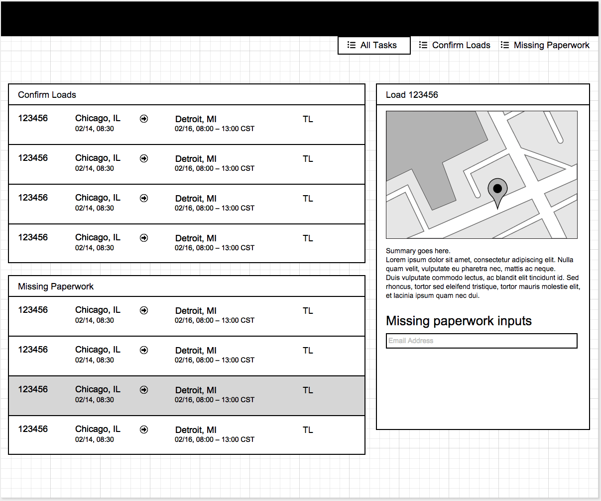
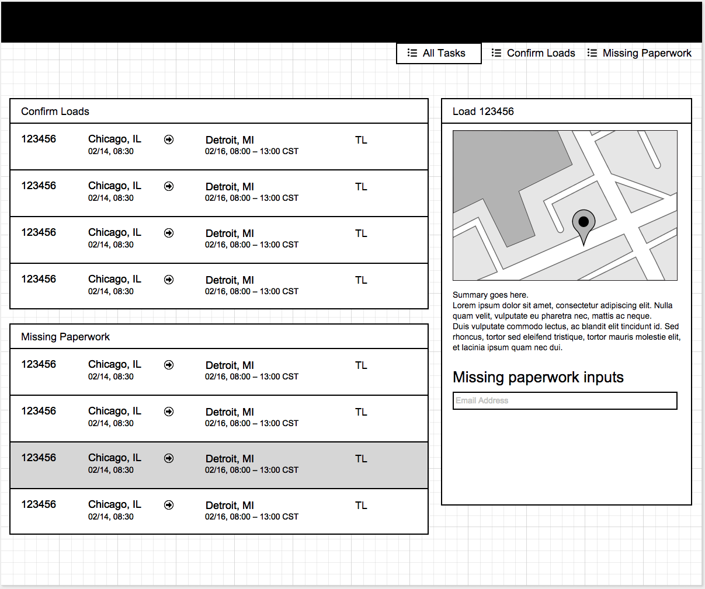

To increase the amount of time Coyote reps spend booking new freight we needed to increase carrier self-tracking.
Sketches
The paper and pen phase of this project was quick and used to explore a few solutions to the problem. The team met and decided on one design idea. Requirements gathering was easy as most of the tasks were already defined in other areas of the app. The hard part here was deciding when a task became important enough to warrant a spot on this page as there are many tasks required by any given carrier user on our website.
Mockups
After putting together mockups of our solution and running user tests with carrier and the reps that manually track them, we quickly found a problem with our solution—while gathering all the tasks into one, easy to use interface solved half the problem, sending them to other areas of the site to complete the task slowed them down.
So we decided to implement an actionable sidebar to complete each task without having to leave this page.
 

Final Design
Adding an actionable sidebar increased the effort to complete this project considerably so we built the project in phases, allowing other projects and features to take priority in between.
With the release of each phase, the amount of self-tracking increased, eventually surpassing our 40% goal. Other parts of the business have seen this feature and are now developing their own "My Tasks" pages to help solve similar problems.